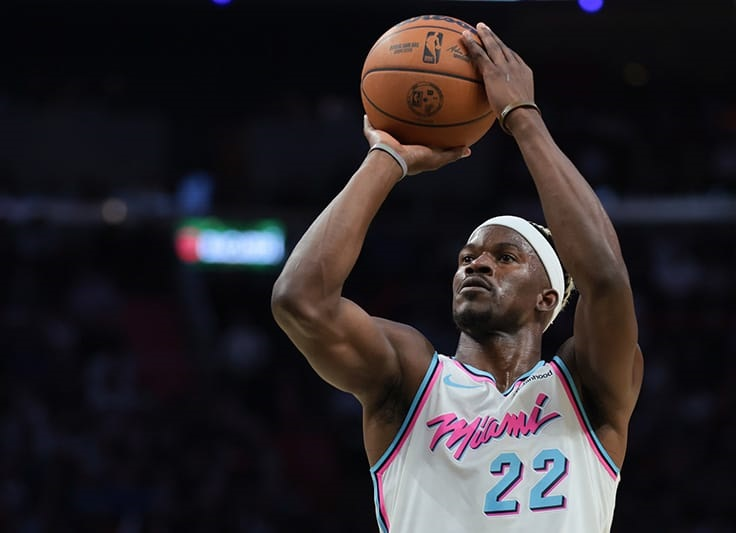
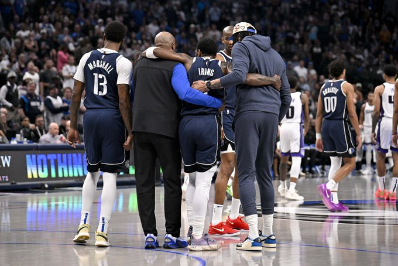
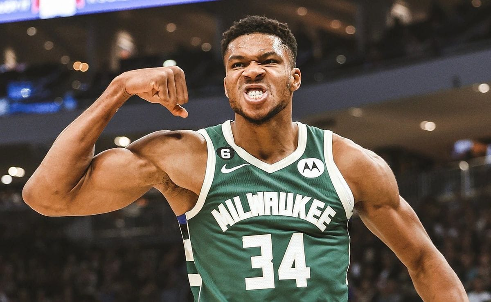

LAKERS

Los Angeles Lakers fichan a Luka Doncic.
El esloveno se convertirá en el próximo jugador franquicia de los Lakers a cambio de un Anthony Davis.
Doncic tiene firmadas ésta y dos temporadas adicionales a cambio de 138 millones de dólares.
WARRIORS

Jimmy Butler a Warrios.
El culebrón Jimmy Butler ha vivido su último episodio, y en último giro de los acontecimientos el alero se ha
convertido en nuevo jugador de los Golden State Warriors.
DALLAS

Kyrie Irving dice adiós a la temporada.
Kyrie Irving ha sufrido una rotura de ligamento cruzado. Acaba la temporada para el base de los Mavericks.
M.BUCKS

Giannis Antetokounmpo alcanza los 20.000 puntos en su carrera.
Se convierte en el primer jugador en anotar tantos puntos con la camiseta de los Bucks.